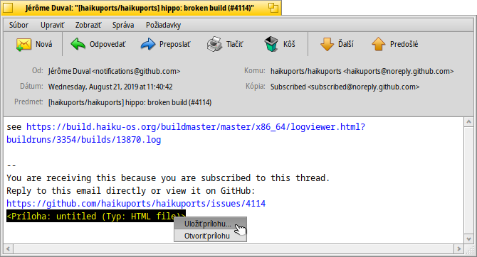
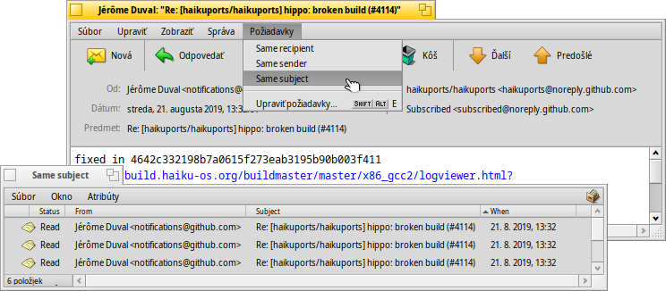
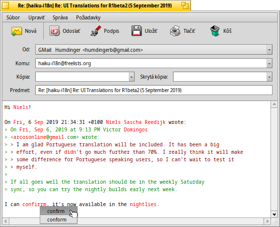
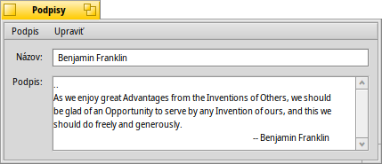
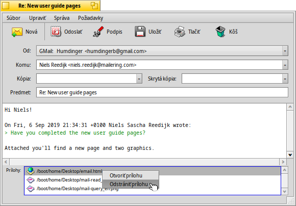
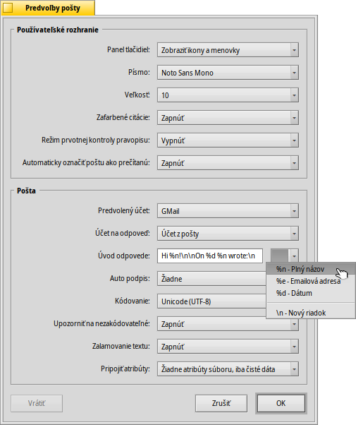

| Obsah |
| Čítanie správ Tvorenie nových správ Predvoľby |
 Pošta
Pošta
| Panel: | ||
| Umiestnenie: | /boot/system/apps/Mail | |
| Nastavenia: | ~/config/settings/Mail/ ~/config/settings/Mail/Menu Links/ - Objekty umiestnené tu sa zobrazia v kontextovom menu schránky ~/config/settings/Mail/signatures/ - Miesto na ukladanie podpisov ~/config/settings/Mail/status/ - Miesto na ukladanie vlastných stavov |
Pošta je predvolený prehliadač a editor e-mailov v Haiku. Neslúži na príjem a posielanie pošty, na to slúži mail_daemon, ktorý možno nakonfigurovať v nastaveniach E-mailov.
Táto stránka slúži ako všeobecný prehľad aplikácie Pošta. Ďalšie informácie o tom, ako e-maily v Haiku fungujú, nájdete v téme Workshop: spravovanie e-mailov.
 Čítanie správ
Čítanie správ
Dvojitým kliknutím na súbor e-mailu ho otvoríte v Pošte. Rozhranie programu je pomerne jednoduché:
A menu and optional tool bar on top, with an area of the interesting attributes of a mail (to, from, subject, date) below that, and then the actual body of the mail. If the mail appears with strange characters or empty, try to change the in the menu.
Prípadné prílohy pripojené k e-mailu sú uvedené na konci správy. Kliknutím pravým tlačidlom na prílohu otvoríte kontextové menu s možnosťami alebo . Tiež môžete prílohu pretiahnuť myšou rovno na Plochu alebo do ďalšieho okna Trackera.
Použitie väčšiny položiek v menu a v paneli nástrojov je jasné, takže sa zameriame iba na zopár najdôležitejších.
Súbor
Keď zatvoríte okno novej pošty, jej stav sa za normálnych okolností zmení z „Nová“ na „Prečítaná“. Môžete ale nastaviť aj iné stavy výberom zo submenu . Tam tiež nájdete možnosť , ktorá umožňuje tvorbu vlastných stavov, ktoré sa ukladajú do ~/config/settings/Mail/status/.
Upraviť
Odtiaľto môžete otvoriť Pošty (pozri nižšie) a odkaz na správu vašich , ktorý otvorí panel nastavenia E-mailov.
Zobraziť
Iba zriedka, ak vôbec, budete potrebovať tieto dve položky:
| ALT H | Zobrazí celú hlavičku pošty v prípade, že by ste chceli napr. vypátrať cestu pošty. | ||
| Zobrazí kód pošty, tzn. všetky riadiace znaky bez zafarbenia citácií alebo URL odkazov. |
Správa
Rôzne možnosti ako odpovedať na poštu je potrebné trochu objasniť.
| ALT R | Štandardná odpoveď určená serveru, ktorý vám správu odoslal. POZNÁMKA: V prípade e-mailovej konferencie tento nástroj pošle odpoveď celej konferencii, nie iba autorovi príspevku. | ||
| OPT ALT R | Táto funkcia naopak pošle odpoveď iba na adresu z atribútu „Od“. | ||
| SHIFT ALT R | Pošle odpoveď pôvodnému odosielateľovi a všetkým ostatným príjemcom pôvodnej správy. |
Položky , a netreba bližšie vysvetľovať.
Ak ste otvorili e-mail z výsledkov hľadania alebo z Trackera, možnosti a presúvajú na predošlý/ďalší e-mail v zozname.
zhromaždí všetky e-mailové adresy z hlavičky, tela a submenu e-mailu. Vybranie adresy otvorí aplikáciu Ľudia, do ktorej sa všetky kontaktné informácie uložia.
Požiadavky
This menu holds queries that show all mails related to the currently open mail. Selecting , or opens a query that lists all corresponding mails:

Tvorenie nových správ
A new email is created by invoking of the menu or the corresponding icon from the tool bar of an open email. Or you just start the Mail application or choose from the context menu of the mailbox icon in the Deskbar.

Okno sa dosť podobá na to, ktoré slúži na čítanie pošty. Menu a panel nástrojov sú mierne odlišné a textové polka s e-mailovou adresou príjemcu, predmetom atď. musia byť vyplnené.
slúži na poslanie kópií e-mailu viacerým ľuďom. Narozdiel od uvedenia viacerých adries do políčka „Komu“ signalizujete príjemcom kópií, že od nich nečakáte žiadne odpovede. robí to isté až na to, že príjemcov vzájomne utají.
Môžete zadať viac príjemcov tak, že ich adresy oddelíte čiarkami. , , a sú rozbaľovacie menu. Obsahujú všetky e-mailové adresy, ktoré váš systém našiel v súboroch aplikácie Ľudia. Ich atribút „Skupina“ ich roztriedi do príslušných submenu.
Znova sa zameriame na zaujímavejšie možnosti v menu:
Súbor
S možnosťou môžete vašu prácu zachovať a vrátiť sa k nej neskôr. Opätovne ju môžete načítať zo submenu , ktoré vypíše všetky správy so stavom „Rozpísané“.
Upraviť
and or their respective shortcuts ALT / - are used to add/remove a level of quoting by adjusting the number of ">" symbols in front of quoted lines. Just select some text in all the lines you want un/quoted and invoke the menu item.
Funkcia momentálne ponúka kontrolu iba textu v anglickom jazyku tak, že nesprávne alebo neznáme slová zafarbí červenou a zmení ich na kurzívu. Kliknutím pravým tlačidlom na takéto slovo vyvoláte kontextové menu, ktoré ponúka návrhy správnych foriem alebo možnosť slovo do slovníka.
Odtiaľto môžete opäť otvoriť Pošty (pozri nižšie) a odkaz na správu vašich , ktorý otvorí panel nastavenia E-mailov.
Správa
Pomocou funkcie môžete pridávať preddefinovaný text na koniec vašich e-mailov. Zo submenu môžete vybrať špecifický alebo podpis.
Vytvárať nové podpisy alebo upravovať existujúce vám umožňuje položka , ktorá otvorí okno, do ktorého vkladáte samotný text a názov vášho podpisu. Tu nájdete v menu položky konkrétny podpis alebo či momentálne otvorený. Podpisy by sa mali ukladať do ~/config/settings/Mail/signatures.
Na pridanie a odoberanie príloh používajte a . Súbory môžete tiež pretiahnuť myšou z okna Trackera. Dávajte si ale pozor, aby ste súbor pretiahli do hlavičky e-mailu (sekcia s položkami Komu/Od/Predmet v hornej časti), lebo ak je daný súbor textový, jeho obsah sa skopíruje do tela e-mailu.
Pripojené súbory sú uvedené v dolnej časti hlavičky. Odtiaľto môžete odstrániť súbor vyvolaním kontextového menu alebo stlačením klávesu DEL.
Požiadavky
Táto funkcia zatiaľ nebola sfunkčnená, no je určená na zobrazenie všetkých správ, ktoré súvisia s aktuálnou správou spoločným odosielateľom alebo predmetom/vláknom.
Predvoľby

Predvoľby Pošty sa delia na dve časti:
Používateľské rozhranie
| Umožňuje zobraziť popisy ikon alebo úplne skryť panel nástrojov. | ||
| Nastavenie typu písma použitého v texte e-mailu. | ||
| Nastavenie veľkosti písma. | ||
| Zafarbuje rôzne úrovne citovania. | ||
| Vypne/zapne kontrolu pravopisu pri štarte. | ||
| Ak zatvoríte e-mail so stavom „Nový“, jeho stav sa automaticky zmení na „Prečítaný“. |
Pošta
| Ak používate viac e-mailových účtov, touto možnosťou určujete, ktorý sa bude predvolene používať pri tvorbe nových správ. | ||
| Keď odpovedáte na správu, môžete použiť buď , nastavený vo výsuvnom menu vyššie, alebo , ktorý odošle odpoveď z toho istého účtu, ktorý prijal pôvodnú správu. | ||
Úvod bude vložený ešte pred citovaným textom vo vašej odpovedi. Môžete použiť rôzne premenné z rozbaľovacieho menu vedľa textového poľa. Napríklad : „Dobrý deň %n!\\n\\n %d ste napísali:\\n“ by vyzeralo takto:
Dobrý deň Dr. Hawking! Mon, 18 Jan 1998 02:55:16 +0800 ste napísali: > so thanks again for the inspiration concerning the cosmological constant. > ...and the rest of the quoted text following... | ||
| Automaticky pridá podpis na koniec e-mailu. | ||
| Nastaví predvolené kódovanie. | ||
| Ak vaša správa obsahuje znaky, ktoré nemôžu byť zašifrované aktuálne nastavenou šifrovacou metódou, táto možnosť vás na to môže upozorniť, čo vám dáva príležitosť zmeniť typ šifrovania pred poslaním správy. Inak sa nezašifrovateľné znaky nahradia trojuholníkovými symbolmi. | ||
| Zalomí riadok po každom 76. znaku, čo uľahčuje čítanie. | ||
| Môžete si vybrať, či chcete posielať atribúty BFS popri iných prílohách. Toto je užitočné pre iných používateľov Haiku, pretože dostanú „kompletný“ súbor (napr. atribúty ako umelec, album, názov pri MP3 súboroch), no môže zmiasť používateľov iných systémov, ktorí si budú lámať hlavu nad tým čo sú tie BeOS Atribúty zač... Ak si zvolíte možnosť neposielať atribúty ako prílohu, zabaľte vaše súbory do archívu zip pred tým, ako ich pošlete, inak budú atribúty BFS odstránené. |